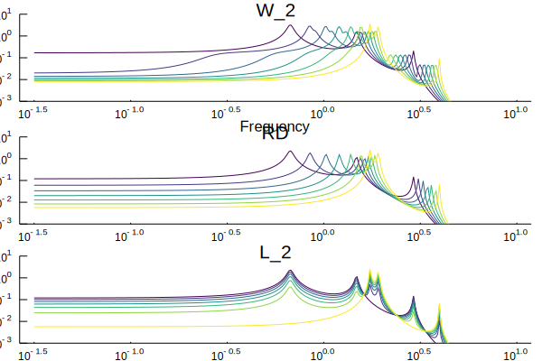

Interpolations
Whenever you define a distance, that distance implies the existence of a shortest path, a geodesic. An interpolation is essentially a datapoint on that shortest path. We provide some functionality to interpolate between different spectra and models.
Below is an example usage of interpolations. We initially create two random systems, we then define the distance under which to interpolate and then calculate the frequency response for some different values of the interpolation parameter $t \in (0,1)$
using SpectralDistances, ControlSystems, Distances, Plots, Random
Random.seed!(0)
n = 4
r1 = complex.(-0.01 .+ 0.001randn(3), 2randn(3))
r1 = ContinuousRoots([r1; conj.(r1)])
r2 = complex.(-0.01 .+ 0.001randn(3), 2randn(3))
r2 = ContinuousRoots([r2; conj.(r2)])
r1,r2 = normalize_energy.((r1, r2))
A1 = AR(r1)
A2 = AR(r2)
##
fig1 = plot()
t = 0.1
dist = ClosedFormSpectralDistance(domain=Continuous(), p=2, interval=(0., exp10(1.01)))
interp = SpectralDistances.interpolator(dist, A1, A2)
w = exp10.(LinRange(-1.5, 1, 300))
for t = LinRange(0, 1, 7)
Φ = clamp.(interp(w,t), 1e-10, 100)
plot!(w, sqrt.(Φ), xscale=:log10, yscale=:log10, line_z = t, lab="", xlabel="Frequency", title="W_2", ylims=(1e-3, 1e1), colorbar=false, l=(1,), c=:viridis)
end
rdist = EuclideanRootDistance(domain=Continuous(), p=2)
interp = SpectralDistances.interpolator(rdist, A1, A2, normalize=false)
fig2 = plot()
w = exp10.(LinRange(-1.5, 1, 300))
for t = LinRange(0, 1, 7)
Φ = interp(w,t)
plot!(w, sqrt.(Φ), xscale=:log10, yscale=:log10, line_z = t, lab="", xlabel="", title="RD", ylims=(1e-3, 1e1), colorbar=false, l=(1,), c=:viridis)
end
fig3 = plot()
w = exp10.(LinRange(-1.5, 1, 300))
Φ1 = bode(tf(A1), w)[1][:]
Φ2 = bode(tf(A2), w)[1][:]
for t = LinRange(0, 1, 7)
plot!(w, (1-t).*Φ1 .+ t.*Φ2, xscale=:log10, yscale=:log10, line_z = t, lab="", xlabel="", title="L_2", ylims=(1e-3, 1e1), colorbar=false, l=(1,), c=:viridis)
end
fig = plot(fig1, fig2, fig3, layout=(3,1))/home/travis/.julia/packages/GR/ZI5OE/src/../deps/gr/bin/gksqt: error while loading shared libraries: libQt5Widgets.so.5: cannot open shared object file: No such file or directory
connect: Connection refused
GKS: can't connect to GKS socket application
Did you start 'gksqt'?
GKS: Open failed in routine OPEN_WS
GKS: GKS not in proper state. GKS must be either in the state WSOP or WSAC in routine ACTIVATE_WS